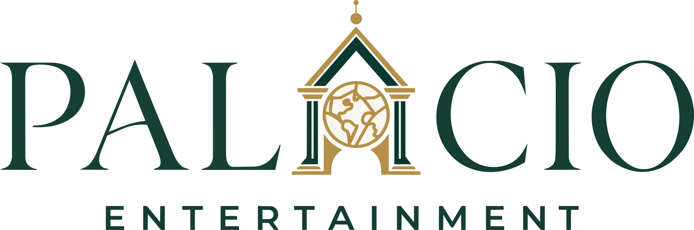

Applied design inquiry · New Earth OJT · July 2026
A label, considered
as a system.
Bringing a team’s existing ideas into a coherent identity, artist-page concept and working structure — then letting feedback change the boundaries of the work.
Public review edition · 18 October 2026. A sanitized portfolio reconstruction, not the original label website or a claim of commercial launch.
Read the design case ↓
Identity specimen · retained project artifact

The project wordmark is retained. Private artist assets, recordings and correspondence are not.
01 · Context & contribution
Synthesis, not a solo-origin story.
The starting point
The OJT assignment asked teams to develop a record-label concept, identity, roles and release infrastructure. I joined an existing team with ideas, sketches and an emerging mission. The work below does not erase those prior contributions.
My work
I independently developed and compared logo proposals, synthesized a visual system, designed artist-page concepts and organized an eight-section Command Center. A supervisor and the group reviewed the work; implementation and presentation were AI-assisted.
- Context
- Supervised team-based OJT
- My focus
- Brand synthesis · web concepts · coordination
- Evidence
- Design decks · brief · dated project correspondence
- Limits
- No audience study or measured learning gains
Evidence basis: New Earth OJT project briefs; Logo Development and Brand Identity decks; project correspondence dated July 17–27, 2026. Private originals are preserved, not republished here.
02 · Design decisions
Compare a direction.
Make the choice explainable.
Five variants, explicit criteria
The logo-development work compared five variants and discussed how an architectural mark, an open arch and letter-based forms could express the label concept. This was criteria-led design review, not five controlled experiments or an audience-validated preference study.
One visual language
Emerald, warm ivory and antique gold connect the identity and editorial presentation. The aim was a coherent system across label-level material and individual artist pages, rather than unrelated promotional layouts.
Emerald#0B4F45
Warm ivory#FAECDE
Antique gold#C69A3B
Evidence basis: the July 2026 logo-development and brand-identity decks. The simplified palette strip is a new presentation of those design choices.
03 · Artist-page concept
Space for an artist’s world.
Control over what becomes public.
Fictional example · not an original artist
Artist A
A short artist introduction would sit here, followed by approved work and a clearly attributed story.
A / 01No audio or artist photograph is included in this public review.
Schematic reconstruction made for this review, not an archival screenshot. Artist names and personal material are deliberately absent.
04 · Feedback & revision
The boundary became
part of the design.
Content feedback made approval and publication boundaries a design requirement. I proposed written content approval and restricted the prototype to private review.
- 01
Draft
Keep unapproved material in private review.
- 02
Review
Confirm the exact asset, context and intended use.
- 03
Permission
Record written approval before public release.
Evidence basis: July 23–27, 2026 project correspondence. This diagram represents my proposal; it is not evidence that the team adopted or tested the workflow.
05 · Outcome & limits
A completed body of design work.
Not every outcome is a launch.
The retained artifacts show design development, synthesis and response to critique. My participation ended; the work remains part of my design practice. This review does not claim label adoption, commercial performance, user satisfaction or educational effectiveness.
This public edition contains no unreleased music, private messages, contact lists, artist names or authentication gate. It does not replace or modify the historical Palacio-to-NostalgAI redirect.